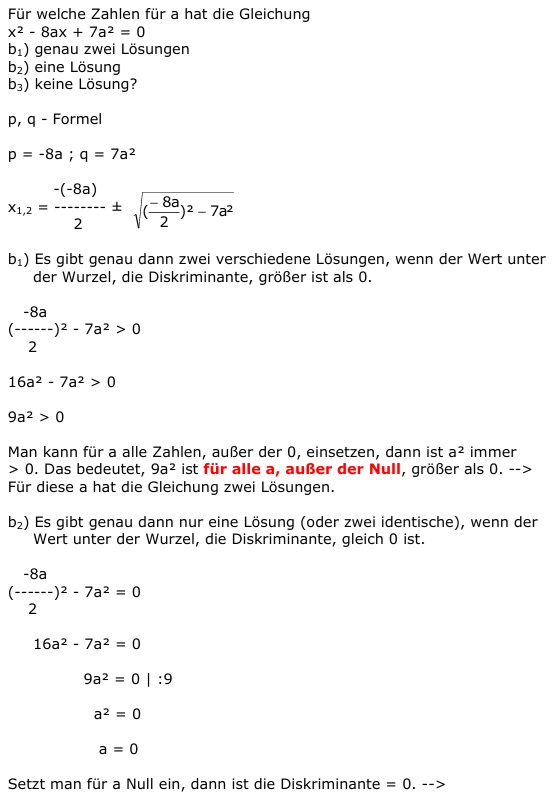

Quadratische Gleichungen Aufgabe 77 Für welche Zahlen für a hat die Gleichung x² - 8ax + 7a² = 0 b1) genau zwei Lösungen b2) eine Lösung b3) keine Lösung? p, q - Formel p = -8a ; q = 7a²  b1) Es gibt genau dann zwei verschiedene Lösungen, wenn der Wert unter der Wurzel, die Diskriminante, größer ist als 0. -8a (------)² - 7a² > 0 2 16a² - 7a² > 0 9a² > 0 Man kann für a alle Zahlen, außer der 0, einsetzen, dann ist a² immer > 0. Das bedeutet, 9a² ist für alle a, außer der Null, größer als 0. --> Für diese a hat die Gleichung zwei Lösungen. b2) Es gibt genau dann nur eine Lösung (oder zwei identische), wenn der Wert unter der Wurzel, die Diskriminante, gleich 0 ist. -8a (------)² - 7a² = 0 2 16a² - 7a² = 0 9a² = 0 | :9 a² = 0 a = 0 Setzt man für a Null ein, dann ist die Diskriminante = 0. --> Für a = 0 hat die Gleichung eine Lösung. b3) Es gibt genau dann keine Lösungen, wenn der Wert unter der Wurzel, die Diskriminante, kleiner ist als 0. -8a (------)² - 7a² < 0 2 16a² - 7a² < 0 9a² < 0 Man kann für a alle Zahlen, außer der 0, einsetzen, dann ist a² immer > 0. Das bedeutet, 9a² ist für alle a, außer der Null, nie kleiner als 0. ---> Für kein a hat die Gleichung keine Lösung.